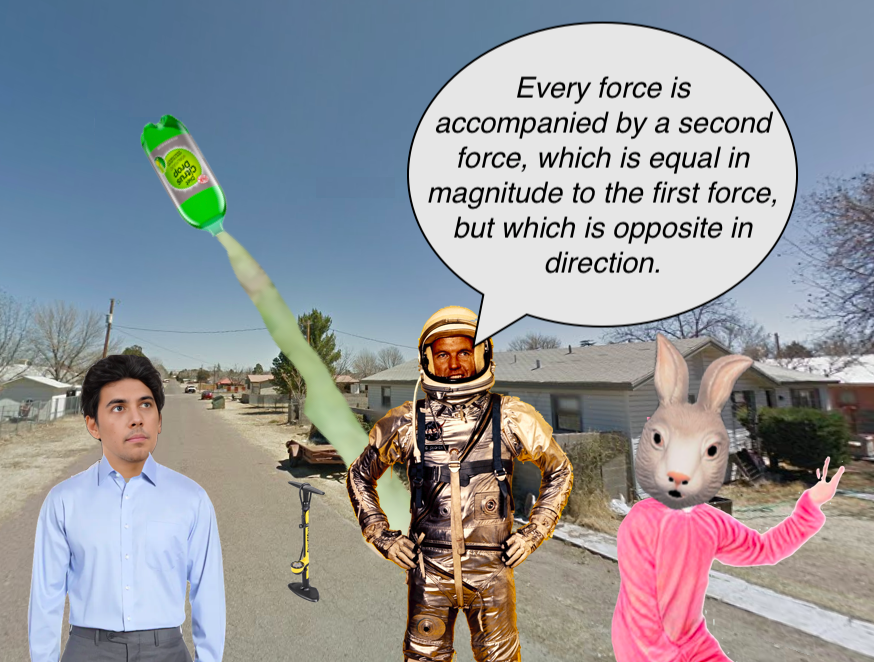

(somewhere in Marfa [TEJAS])
Brazil laid on the hardwood floor. He felt so incredibly good; his body was vibrating in resonance with the oneness which permeated all the [poly]verse, as he simultaneously thought what an evil active ingredient suhtawree was: letting him be supremely happy while he did absolutely nothing.
“So,” the man in the purple bunnySuit said to the former astronaut (whom we made wear a giant plastic jar over his head [albeit perforated]), “we’ve got all this evidence that there is ample supply of dihydrogen monoxide molecules on all these exoplanets. But you don’t think it’s likely that aliens send us a beacon of light embedded with a message that they’ll be here soon?”
The astronaut sawed off the end of a yeast-grapeJuice cork and then swept the crumbs onto the floor a few meters away from Brazil. The astronaut said, “the Alliance™ says that it’ll be coming in fifty terrestrial revolutions around the solstar. These exoplanets are hundreds to thousands to millions to billions of light-years away from us. Based on my understanding of physical space travel, I cannot fathom how it is possible that they could send this beacon of light from their home planet and then travel toward our planet, only lagging behind light – the fastest traveling object in the universe – by 50 jaars?”
BunnySuit leaned back and tapped his chin with his pointer finger. “Do we know they sent the beacon of light from their home planet? Maybe it was from a planet they’ve colonized that is closer?”
“Maybe,” the astronaut said, stabbing a sportsBall-inflationNeedle through the trunctuated cork, “maybe this is akin to all the times yeshian whackjobs said Ahuramazda was gonna show up with a giant sickle to chop down all the [out-group] like they’re wheat, intended to be baked into bread for the [in-group] to eat and devour, as Ahuramazda pushes the PAUSE button on this whole mirage that we call existence.”
The BunnySuit nodded his head. “I have no idea what you just said, but it sounded beautiful.”
Brazil from the floor said: “[Astronaut] Al is trying to communicate that, when the 50-jaar date arrives, absolutely nothing is going to happen, just like when every little madman prophet claims the world is about to end.”
The BunnySuit nodded his head. Then he held up his paw. “But… what if?”
Astronaut Al wrapped black electrical tape around the cork and then tore the tape with his teeth. He put the newly assembled contraption and then rolled an empty plastic 2-liter bottle over toward Brazil. Despite Al’s inebriation, the bottle rolled with a perfect arc to reach Brazil’s hand.
“What do you want me to do with this?” Brazil asked.
“Fill it halfway with water?” Al said.
“From the fridge or the sink?”
“Ooooh,” Al said. “I wonder if there’d be any difference?” he waggishly sings.
Brazil willed himself to his feet and stumbled over to the sink. He semi-filled the 2-liter with sink water, turned off the faucet, and then meditated upon his understanding that the water was composed of atoms that were 99% empty space, held together like magnets, due to how electrical charges create and affect electrical fields which somehow permeate through empty space. Was empty space really empty then? How does the field know to change when an electrical charge is moved? What exactly communicates the message to the field? Then Brazil remembered that somewhere in Europa, scientists were accelerating charged particles down fifty-kilometer underground corridors, just to smash them into each other like automobiles in a demolition derby, hoping the crash debris will somehow help scientists answer all these questions. Or maybe these questions were already answered and Brazil hadn’t been paying attention…?
“Brazil…Brazil…BRAZIL!”
“Huh? What?” Brazil said, still holding the half-filled two-liter bottle in the sink.
“You coming back with the bottle?” Al asked. “You done filling it?”
“You want me to fill it? All the way?” Brazil asked. “I only filled it half-way.”
“Half-way is perfect. Just come back with it.”
Brazil lifted the two-liter, marveled at the increased mass, thought about how gravity was like a magnet bringing mass together, but then remembered that Einstein actually said it was about matter warping empty space, causing objects going in straight lines to appear to be turning as they followed the distorted empty space.
“Thank you,” Al said, extending his hands outward.
Brazil handed him the two-liter. “What are you doing? Making a [combustion-inhalation device]?”
“I’m making a rocket. PsychoBunny said he wanted to shoot off a rocket, but he didn’t want anyone to call the federal guard.”
“Yeah,” Bunny said. “Those bozos have no sense of humour.”
The trio went outside. Bunny went to the side of the house to grab his bike-pump, while Al shoved the modified cork into the open end of the two-liter bottle. Once Bunny returned with the bike pump, Al fastened the nozzle to the inflation needle stabbed through the cork plugging the bottle.
“Start pumping,” Al said.
Bunny pulled the piston upward, creating an imbalance of air pressure that caused air particles to bounce haphazardly [nigh instantly] into the chamber of the pump. Then Bunny pushed the piston downward, creating a different imbalance that caused the air particles to bounce haphazardly [nigh instantly] down the tube, through the inflation needle, and into the two-liter bottle. Bunny pumped and pumped and pumped.
“I’m getting tired,” Bunny said.
“Keep going!” Al demanded.
Bunny kept pumping.
As the two-liter grew taut and highly pressurized, Al aimed the bottom end of the two-liter upward. Now with each pump, air bubbles rippled through the water, as water slowly dripped from the nozzle connection.
Then it started happening. The cork started slipping out the neck of the bottle.
WHOOOOOOOOSH!
The cork shot out, the imbalance of pressure caused water to rush outward with great force. And the plastic bottle rocketed forward in the opposite direction.

PsychoBunny danced in celebration, as [electromagnetism and gravity] completely expelled the liquid water and pressurized air mixture, and then the plastic bottle fell from the heavens and hit the asphalt on the street.
Brazil jogged over to the fallen bottle and collected it. The interior was foggy like a cloud. Brazil examined it, as he walked, and tried to remember if a decrease in pressure was what enabled clouds to condensate. His addled mind couldn’t reconfigure his memory. But that was all right with Brazil. Everything was all right.
“You can do this with your kid,” Al said to Brazil.
Brazil handed the bottle back to Al. “My kid’s a baby.”
“What? Babies can’t appreciate rockets?” Al said. “I’m pretty sure they do.”
“I don’t know,” Bunny said. “I think it might freak them out.”
Brazil wished they would stop talking about his baby. It didn’t really affect him much emotionally, the pleasant hum of the suhtawree continued to be the overwhelming force in his cognition, but there was a twinge of remorse. A slight twinge that suggested an objective observer might look down upon his abdication of responsibilities. His MOB was dead, but, he knew, the moment he charged that thing, he’d have a lot of missed communication attempts from his wife, Omusupe.
Then Brazil made the decision. He needed to go home. He was supposed to have left Marfa last night and returned to Alpine, where he lived, since it was the weekend.
“I need to go home,” Brazil said.
Astronaut Al looked at him quizzically. “On no sleep and a head full of psychoactives? I don’t think I can permit such shenanigans.”
“Don’t leave!” the bunny said. “Don’t leave! Three is way better than two. With three sides you can make a closed shape! But with two sides, what can you have? An angle at the intersection? A couple of parallel lines?”
“Y’all’re right,” Brazil said. “I’m out of my head.” And then they went back inside the house.
Astronaut Al eventually went to the bathroom. And as PsychoBunny was distracted, watching a bead of water slowly travel down the floorboards of his crooked house, Brazil simply stepped out the front door and walked to his automobile parked on the street. He slid in the driver’s seat, turned the key, and motored himself down the street.